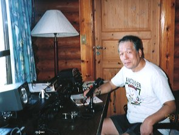
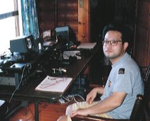
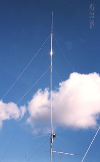
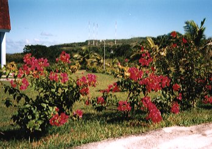
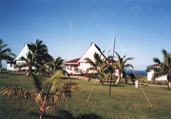
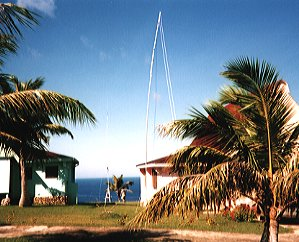
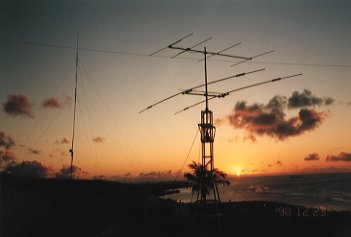
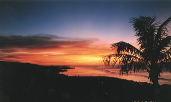

KH2K/AH0 1998 Dec.

Saipan Is. Northern Mariana
22～26.Dec.1998
|
【今回の運用目的】
1998年の暮れも押し詰まった12月22日の夜、今年2度目のサイパンからの運用のため、
慌ただしく日本を後にした。
  KH2K/AH0を運用するJA1RJU(左)とJJ1QXG(右)
【KH2K/AH0の160/80m運用】
クリスマス・ミュージックに迎えられて深夜のサイパン空港に到着。
ホテルへ向かう沿道は、家々のクリスマスの飾り付けで星空が目立たなくなるほど明るい。
クリスマスは雪の降らない南の島でも変わらない。 次は160mバンドのアンテナの製作だが、この小高い丘の上のコテージ(ログハウス)の"庭"は、 幸いなことにフルサイズのアンテナが張れるスペースがあるので調整の簡単なダイポールを上げる事にした。 160mバンドの半波長の80mはさすがに長い！。 このアンテナは一番高い中心部でも12、3mで高さは取れないが、海抜が高い分これでも何とか飛びそうな感じ。 太陽が水平線に真っ赤になって沈む頃、ようやく160mのアンテナが出来上がった。 さっそく同調周波数を測定してみるとSWRアナライザー(MFJ-259B)のメーターが振り切って測定が不可能だった。 近くに見える地元のBC局が夕方になって放送を始めたため、その電波を拾っているのが原因らしい。 測定は中断してぶっつけ本番で09:30z過ぎから160mバンドの運用を始める。 アンテナの長さを設定した1.828MHzで送信、1.9MHz帯のJAバンドを受信する。 "CQ"には多くのJA局がコールしてくれた。信号も強力に届いているらしい。
  80mの組みを試したR-7000/コテージの玄関前からBC局を望む(前方中央のアンテナ群)
帰国する26日は、早朝(午前3時頃)にホテルを出発しなければならないので、 160mバンドのアンテナは遅くとも25日の夜までに撤去する必要があった。 このため24日の夜間が最後の運用となるはずだった。 JA以外とのQSOが伸びなかったため、夜間でも撤去出来る"簡易型"のダイポールに建て替え、 25日も引き続き運用を続ける事に変更した。 "簡易型"と言ってもアンテナは前日まで使っていたフルサイズのダイポール。 中央を持ち上げていたポールを撤去し易いように軽いマストに交換して、 場所を移して90度角度を変えて張る事になった。 全長80mのアンテナをどちらの方向にでも向けられるスペースが取れるこの場所はうらやましいほどの広さだ。 この日はアンテナの角度が良かったのか、コンデションが良かったのか160mバンドは良く飛んでくれた。 特に北米南部のW4/5から、 W8/9/0の中部、W7/VE7の西部まで立て続けに呼んできた。 今回は朝方のヨーロッパは時間的にQSOは出来なかったが、この「レンタル・シャック」からのローバンドも、 これからも結構楽しめそうだ。 【160m(1.8/1.9MHz)のQSO局】
○ 12月23日 (FREQ=1.828MHz)
JA1HQT JR1CCT JA2CXK JA1IRH JA2PJC JF1WPB JA1DM JA2FBY
JM1OYQ JA5AVI JI4POR JQ1BNA JA4LKB JH0BQX JA8RJE JR2DPL
JA5MHD JA6PSP JR1GMK JA1CZI JA4LXY JA5CBO JE2OVG JK1BQS
JA5EXW JA2QCX JA2BY JL1UXH JS3VEX JH5KDY JA3FYC JE2EHP
JA1EOD JH1TVS JA1GV JE3HHT JH5FXP JA0MVW JA9XBW JH2QMT
JA0BNX JG1EIQ JE4WKR JA1CHN JK4UOQ JA0UUA JA7AGL JA2IVY
JR7TEQ JA2VPO JF1PUW JA1XQC JE1PNX JI2KXK JG1WNO JA1SKE
JG1ULJ JA6PBO JF2XGF JA6COW JR0FEK JA0DAI JL4DJM JA3CSZ
JE1LPZ JA8DSO JA5GNO JR2KJJ JR4LNG JH0TYE JS2LHI KH2/N2NL
JA5EY JG1LKO JA7KQC JR9MAR JA4AHV JA1NQI JA1ZKZ
○ 12月24日 (FREQ=1.830/25/38MHz)
N6FF NX7K
ZL2REX KH6AT
KH2/K4SXT JA3AAW
DS4CNB
VK6VZ
VK6HD
W8JJ
N4VG
K4TEA
K9JF
○ 12月25日 (FREQ=1.828MHz)
VK3DQW JH7FNM JH2FXK JA3BVJ W4VQ UA0FZ KE9I
JA9HCG JH7FMJ JE6LDS/1 JH2QMT K4IQJ W7LR K9YY
JA5CPI JH7LBE JH6ALF JA4DEY WA4TT K4TEA NE9Z
JA4BAP NA5B JA2XW JA6BZI W4TO KX4R NA5B
JA4ITW JI1NJC JA2AKW JH1RNI/1 VE7ZO K0RI
JA5EY JR6RAH JA7GAX JA3JF W4YO K0KM
JH1OGC JR2EZA N7JW W4AX NA0Y
W4ZV JH2RMM W5DM N4VZ K9FD
JA2EPK JK1GKG W0CXM W5UN K0DEQ
JA4DND JR6EZE JA4KFA W7KCZ KD9SV
  160m用のフルサイズのダイポールアンテナ(片側はゴルフ場に) 【KH2K/AH0の6m運用】
12月23日から運用した6mは、午前中には"CQ Beacon"に何の反応は無かった。
午後になってからようやく320度方向から49.750MHzのTVのバズが聞こえるようになった。
 6m 4el HB9CVとHF 2el HB9CV/左側はR7000
【6mのQSO局】
○ 12月23日 (オープン時間 06:48～07:37z)
7J7CCU(CW)
JR6GV(CW)
JR6VSP(CW)
○ 12月24日 (オープン時間 00:18～02:00z)
KH7R(SSB)
VR98LC(SSB)
○ 12月25日 (オープン時間 01:55～02:54z)
DS1INT(CW) HL5TP(SSB) JH7UPW(SSB)
JA8TSG(SSB) 7J1AEJ/7(SSB) JH0HQP(SSB)
7J7ACX(SSB) 7J7ACX(SSB) JK7IKU/7(SSB)
JR8MCR(SSB) JA9BHZ(SSB)
JA8INJ(SSB) JN7FLQ(SSB)
DS1INT(SSB) HL5XF(SSB)
 何時見てもコテージの窓からの眺めは絶景 (海岸方向を望む） |
| Index | Link |  |
Flash ! DX |
|---|